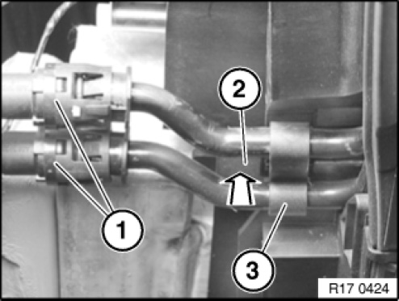
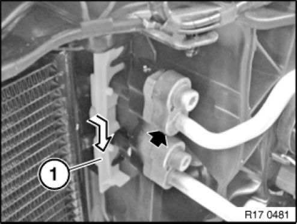
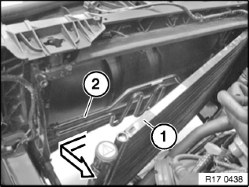

17 11 370 Removing and Installing/Replacing Cooling Loop For Hydraulic Steering
17 11 370 Removing And Installing/Renewing Cooling Loop For Hydraulic Steering

WARNING:
Risk of scalding.
Only perform this repair work after engine has cooled down.

IMPORTANT: When performing repair work on the oil, coolant or fuel circuit, you must protect the alternator against contamination.
Cover alternator with suitable materials.
Failure to comply with this procedure may result in an alternator malfunction.

Necessary preliminary tasks:
- After completing this repair work, check oil level in oil reservoir of hydraulic steering.
- Remove radiator.

Press lines (1) in direction of cooling loop, pull black locking ring rearwards. Keep locking ring pressed and detach lines (1) from cooling loop.
IMPORTANT: Catch and dispose of emerging oil.
Press lock (2). Pull cooling loop (3) of hydraulic steering rearwards out of holder.

Unlock seal (1) in direction of arrow and remove.
Release screw.

Remove A/C capacitor rearwards top from fixtures.
Carefully tilt capacitor (1) in direction of engine, taking care not to damage the capacitor or lines in the process.
NOTE: Lines of A/C system remain connected to capacitor.
Pull cooling loop (2) of hydraulic steering out of module carrier and remove.